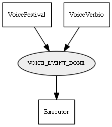

Global overview
All modules
All variables
All commands
Mission files
Pipelines
Variable: VOICE_EVENT_DONE
Variable info:
Variable name
Short description
Who publishes it?
Who subscribes to it?
VOICE_EVENT_DONE
Event to indicate that current text has been reproduced
VoiceFestival
VoiceVerbio
Executor
Variable graph:

Detailed description:
Event to indicate that current text has been reproduced
Page generated by
Mooxygen 1.1.0
at Thu Jan 22 11:30:21 2015